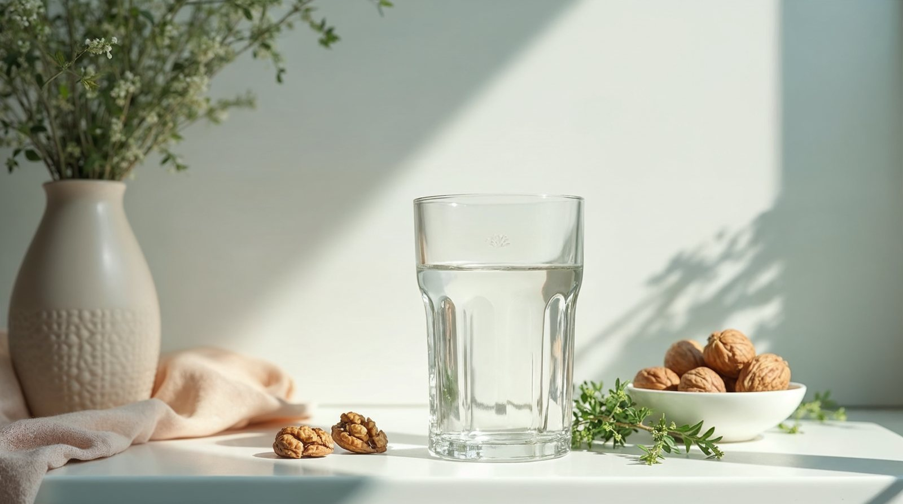
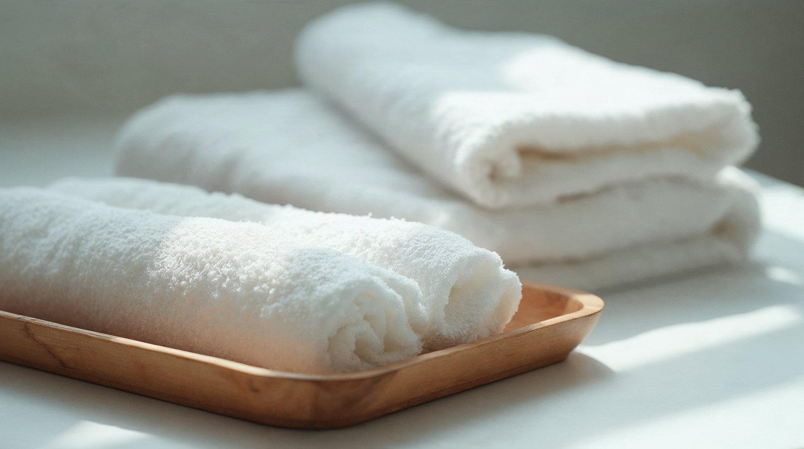

이종호 한의사 감수좋은꿈참사랑한의원 대표원장 (한의사 면허번호 19769)발행 2026-11-23 · 수정 2026-11-26
이 글의 차례
- 왜 이런 불편이 생길 수 있나요
- 항응고제와 항혈소판제는 무엇이 다른가요?
- 먼저 이렇게 여쭙니다
- 스스로 점검해 보세요
- 일상에서 먼저 해 볼 수 있는 것
- 예를 들면 이런 경우입니다
- 얼마나 지켜보고, 언제 연락할까요
- 왜 약 이름과 함께 피부 상태도 살필까요
- 체외충격파가 맞지 않을 때는 어떤 방법을 생각하나요?
- 치료 받은 날은 집에서 어떻게 지내면 좋을까요?
- 약을 처방한 병원과는 어떻게 이어서 살피나요?
- 치료 부위에 따라 무엇이 달라지나요?
- 받는 동안에는 무엇을 말씀해 주시면 될까요?
- 한의원에서 함께 살필 수 있는 경우
- 이렇게 기록해 오시면 상담이 쉬워집니다
- 이런 증상은 먼저 확인이 필요합니다
- 함께 읽으면 좋은 글
피를 묽게 하는 약을 드시는 분은 체외충격파를 이야기하기 전에 약 이름과 복용 이유를 먼저 알려 주셔야 합니다. 이 정보에 따라 체외충격파를 할지, 한다면 어느 부위에 어떤 강도로 할지, 아니면 다른 방법이 맞을지가 달라집니다. 심장이나 혈관 문제로 이런 약을 오래 드시는 분이 많아 진찰에서 꼭 여쭙는 항목입니다.
이런 약은 피가 굳는 과정을 늦추는 항응고제와, 혈소판이 뭉치는 것을 줄이는 항혈소판제로 크게 나뉩니다. 어떤 약인지, 하루에 몇 번 드시는지, 최근 바뀐 적이 있는지에 따라 판단이 달라지므로 '혈압약 같은 것'처럼 대략 말씀하시기보다 약 봉투나 처방전을 보여 주시는 것이 가장 정확합니다.
왜 이런 불편이 생길 수 있나요
- 체외충격파는 몸 밖에서 아픈 부위에 기계적인 자극을 전달하는 방법이라, 피가 잘 멎지 않는 상태에서는 멍이나 피부 아래 출혈이 생기기 쉬울 수 있습니다.
- 항응고제와 항혈소판제는 종류마다 작용 방식이 달라, 약 이름을 정확히 아는 것이 중요합니다.
- 같은 세기라도 피부가 얇거나 뼈 가까이 있는 부위는 멍이 더 잘 들 수 있어, 약 정보와 치료 부위를 함께 봅니다.
- 일부 영양제도 출혈 경향과 관련될 수 있다고 알려져 있어 함께 확인합니다.
- 약을 드시는 이유가 되는 심장·혈관 질환 자체도 진료 방향을 정할 때 고려해야 합니다.
- 약을 끊거나 줄이면 그 약으로 막고 있던 혈전 위험이 커질 수 있어, 통증 치료 때문에 약을 조정하지 않습니다.
항응고제와 항혈소판제는 무엇이 다른가요?
피를 묽게 하는 약이라고 한데 묶어 부르지만, 실제로는 작용하는 방식이 다른 두 갈래가 있습니다. 어떤 쪽인지에 따라 진찰에서 확인하는 내용도 조금씩 달라져, 저는 약 이름을 하나하나 짚어 보며 여쭙습니다.
- 항혈소판제: 아스피린처럼 혈소판이 뭉치는 것을 줄이는 약으로, 심장 시술 뒤나 혈관 질환 예방을 위해 오래 드시는 경우가 많습니다.
- 항응고제: 와파린이나 최근 많이 쓰이는 먹는 항응고제처럼 피가 굳는 과정 자체를 늦추는 약으로, 부정맥이나 다리 혈전 때문에 처방받는 경우가 많습니다.
- 여러 가지를 함께 드시는 경우: 심장 시술 직후처럼 일정 기간 두 가지 이상을 함께 처방받기도 해, 이럴 때는 더 신중하게 살핍니다.
와파린을 드신다면 정기적으로 피검사를 받으며 용량을 맞추시는 경우가 많습니다. 최근 검사 날짜와 그때 용량이 바뀌었는지를 알려 주시면 판단에 도움이 됩니다.

먼저 이렇게 여쭙니다
- 피를 묽게 하는 약(아스피린, 와파린 등)을 드시나요?
- 약을 드시는 이유가 무엇인가요?
- 평소 작은 충격에도 멍이 잘 드나요?
- 최근 약을 바꾸거나 수술을 받은 적이 있나요?
- 이를 뽑거나 내시경을 할 때 약 때문에 따로 안내를 받은 적이 있나요?
- 드시는 영양제가 있나요?
스스로 점검해 보세요
- 심장 시술이나 뇌혈관 문제로 매일 먹는 약이 있다
- 부정맥이나 다리 혈전 때문에 약을 처방받았다
- 작은 일에도 멍이 잘 들고 잘 사라지지 않는다
- 이를 닦을 때 잇몸에서 피가 자주 난다
- 오메가3나 은행잎 성분처럼 출혈과 관련해 자주 언급되는 영양제를 먹는다
- 최근 몇 주 사이 약 종류나 양이 바뀌었다
하나라도 해당하거나 잘 모르겠다면 접수할 때부터 말씀해 주세요. 확인이 끝날 때까지 체외충격파는 미루고 다른 방법을 먼저 살필 수 있습니다.
일상에서 먼저 해 볼 수 있는 것
- 복용 중인 약 이름을 사진으로 찍거나 약 봉투를 가져오기
- 약 이름을 모르면 처방 받은 병원이나 약국에 먼저 물어보기
- 약은 임의로 멈추거나 건너뛰지 않기
- 멍이 잘 드는 편이면 진료 때 먼저 말하기
- 영양제도 이름을 메모해 두기
약 이름은 약 봉투, 처방전, 약국에서 받은 복약 안내문 가운데 하나만 있어도 확인할 수 있습니다. 여러 병원에서 약을 받는다면 병원마다 따로 기억하기보다 한 장에 모아 두시면 빠뜨리는 약이 줄어듭니다. 다른 병원에서 치과 치료나 내시경, 수술 일정이 잡혀 있다면 그 날짜도 함께 알려 주세요. 진료 순서를 정할 때 참고합니다.
예를 들면 이런 경우입니다
- 예를 들어 심장 시술을 받은 뒤 혈전 예방약을 매일 드시는 어르신이 어깨 통증으로 오신 경우라면, 약 봉투를 함께 보고 피부와 멍 상태를 확인한 뒤 체외충격파를 할지, 침이나 온열 같은 다른 방법을 먼저 할지 함께 정합니다.
- 예를 들어 건강검진 뒤 아스피린을 조금씩 먹기 시작한 직장인이 팔꿈치 통증으로 오신 경우라면, 본인은 약을 먹지 않는다고 생각하기 쉬워, 접수 때 드시는 약을 여쭈면 아스피린도 함께 말씀해 주시길 부탁드립니다.
- 예를 들어 부모님 진료에 함께 오는 가족이라면, 부모님이 드시는 약을 사진으로 찍어 오거나 약 목록을 미리 정리해 오시면 진료 시간이 짧아도 빠뜨리지 않고 확인할 수 있습니다.

얼마나 지켜보고, 언제 연락할까요
- 체외충격파를 받은 뒤 치료 자리가 잠시 붉어지거나 살짝 멍이 드는 경우가 있습니다. 며칠 동안 점점 옅어지는지 살펴 주세요.
- 멍이 며칠이 지나도 옅어지지 않고 오히려 번지며 커지면 다음 예약을 기다리지 말고 전화로 알려 주세요.
- 약이 새로 바뀌었다면 바뀐 뒤 처음 오시는 날 접수할 때 바로 말씀해 주세요.
왜 약 이름과 함께 피부 상태도 살필까요
같은 약을 드셔도 멍이 드는 정도는 사람마다 다릅니다. 그래서 진찰 때는 약 정보와 함께 평소 멍이 어떻게 드는지 여쭙고, 치료하려는 부위의 피부가 얇거나 상처가 있는지 함께 살핍니다.
연세가 드시면 피부가 얇아지고 작은 혈관이 약해져 같은 자극에도 멍이 쉽게 들 수 있습니다. 오래 드신 스테로이드 약이나 피부 질환이 있다면 그 이야기도 함께 해 주세요. 치료 자리와 세기를 정할 때 참고합니다.
체외충격파가 맞지 않을 때는 어떤 방법을 생각하나요?
체외충격파를 하지 않기로 했다고 해서 할 수 있는 것이 없는 것은 아닙니다. 아픈 부위와 원인에 따라 온열 물리치료로 굳은 부위를 살피고, 생활 속 동작을 조정하는 것부터 시작할 수 있습니다.
침을 쓸 때도 드시는 약을 미리 알고 있으면 침을 놓는 자리와 깊이, 뺀 뒤 누르는 시간을 그에 맞게 정합니다. 추나 역시 강도를 조절하며 몸 상태에 맞게 검토하고, 어느 방법이든 다음 방문 때 멍이나 불편이 없었는지 먼저 여쭙습니다.
한약을 함께 생각하는 경우에는 지금 드시는 약을 먼저 모두 확인합니다. 약재에 따라 함께 살펴야 할 것이 있어, 약 목록을 보고 맞지 않는 약재는 빼고 정하며, 양약은 그대로 유지하시도록 말씀드립니다.
치료 받은 날은 집에서 어떻게 지내면 좋을까요?
- 치료 부위를 세게 문지르거나 주무르지 않기
- 그날은 사우나나 오랜 반신욕처럼 몸을 많이 데우는 일과 과음을 피하기
- 치료 부위가 붉어졌다면 저녁에 한 번, 다음 날 아침에 한 번 사진으로 남겨 두기
- 무거운 짐을 그 부위로 오래 들지 않기
사진을 남겨 두면 멍이 옅어지는지 번지는지를 말로 설명하기보다 훨씬 정확하게 보여 주실 수 있습니다. 다음 방문 때 그 사진을 함께 보며 세기와 간격을 다시 정합니다.
약을 처방한 병원과는 어떻게 이어서 살피나요?
한의원에서는 드시는 약을 바꾸거나 멈추라고 말씀드리지 않습니다. 약에 대해 궁금한 점이 생기면 처방한 의료기관에 여쭈어 보시도록 안내하고, 그쪽에서 들은 내용을 다음 진료 때 알려 주시면 그에 맞추어 계획을 정합니다.
약이 바뀐 직후에는 몸이 새 약에 적응하는 시기라, 그사이에는 치료 세기를 낮추거나 체외충격파를 잠시 미루기도 합니다.
치료 부위에 따라 무엇이 달라지나요?
같은 약을 드셔도 어디를 치료하느냐에 따라 조심할 점이 다릅니다. 어깨 깊은 힘줄처럼 살이 두꺼운 곳과, 손목·팔꿈치 바깥쪽·발뒤꿈치처럼 피부 바로 아래 뼈가 있는 곳은 같은 세기라도 피부와 그 아래 조직이 받는 영향이 다르기 때문입니다.
그래서 약을 드시는 분은 체외충격파를 할지부터 진찰 뒤 정합니다. 혈액 응고에 문제가 있다고 들으셨거나 치료 부위에 감염이 있다면 하지 않거나 더 신중히 판단하고, 하기로 하더라도 범위와 세기는 부위와 그날 반응을 보며 정합니다.
받는 동안에는 무엇을 말씀해 주시면 될까요?
체외충격파는 세게 할수록 좋은 치료가 아닙니다. 저희가 더 신경 쓰는 것은 어디에, 얼마나 할지를 정하는 일이고, 강도는 받는 동안에도 계속 맞춥니다. 멍이 잘 드는 분일수록 참고 견디기보다 바로 말씀해 주시는 편이 안전합니다.
느낌을 0점에서 10점 사이 숫자로 말씀해 주시면 조절이 쉬워집니다. 아픔이 갑자기 커지거나 저린 느낌이 퍼지면 그 자리에서 알려 주세요. 위치와 세기를 바로 다시 맞춥니다.
한의원에서 함께 살필 수 있는 경우
- 피를 묽게 하는 약을 드시는 분은 약 정보를 먼저 확인한 뒤 체외충격파가 맞는지 함께 판단합니다.
- 체외충격파가 맞지 않다고 판단되면 다른 방법을 함께 찾습니다.
- 필요하면 약을 처방한 의료기관과 상의하시도록 안내합니다.
좋은꿈참사랑한의원에서는 먼저 드시는 약과 그 이유, 멍이 드는 정도를 충분히 듣고 통증 부위를 살핍니다. 체외충격파를 검토하는 경우에도 약 정보와 피부 상태를 확인한 뒤 결정하며, 맞지 않다고 판단되면 침이나 온열, 생활 속 동작 조정 같은 다른 방법을 상태에 맞게 정합니다. 귀가 전에는 집에서 살펴볼 점과 다음 방문 때 확인할 일을 알려 드립니다.
처음 오시면 접수 때 드시는 약과 영양제, 최근 시술 일정을 함께 알려 주시고, 진료실에서는 아픈 부위와 경위를 들은 뒤 맥부터 짚어 봅니다. 그다음 아픈 곳을 눌러 보고 움직여 보며, 필요하다고 판단될 때 초음파로 주변 조직을 확인합니다.
체외충격파를 쓰기로 하면 원내 장비(제우스·한일티엠) 가운데 어떤 것을 쓸지, 어느 부위에 어느 세기로 시작해 몇 번, 어떤 간격으로 이어 갈지는 약 정보와 반응을 보며 진찰 뒤 함께 정합니다. 비용이나 보험 적용은 방문 전 전화로 확인해 주세요.
드시는 약은 시술 전에 꼭 알려 주시고, 임신 가능성이나 치료 부위의 금속 삽입물, 피부 상처가 있다면 함께 말씀해 주세요. 약은 처방한 의사와 상의 없이 줄이거나 끊지 않습니다.
이렇게 기록해 오시면 상담이 쉬워집니다
- 복용 중인 약의 이름, 용량, 처방한 병원
- 약을 드시게 된 이유와 시작한 시기
- 영양제와 건강기능식품 이름
- 최근 멍이 든 부위와 계기
- 다른 병원에서 예정된 시술이나 수술 일정
진통제 가운데에도 출혈과 관련해 함께 살펴야 하는 것이 있어, 머리가 아플 때 가끔 드시는 약도 적어 주시면 좋습니다. 약 이름을 모르시면 심장 때문에 먹는 약처럼 드시는 이유만 적어 오셔도 진료실에서 이어서 확인합니다.
약 봉투를 챙기는 일이 번거롭게 느껴지실 수 있습니다. 그래도 그 봉투 하나가 오늘 어디에, 얼마나 할지를 정하는 출발점이 됩니다. 다음에 오시면 그사이 약이 바뀌지 않았는지, 지난번 치료 자리에 멍이 남지 않았는지부터 여쭙겠습니다.
이런 증상은 먼저 확인이 필요합니다
- 치료 부위가 빠르게 부어오르며 몹시 아프거나, 검은 변을 보거나 코피가 잘 멈추지 않는 경우
- 갑자기 심한 두통이 오거나, 한쪽 팔다리 힘이 빠지거나 말이 어눌해지는 경우
이런 신호가 있으면 한의원보다 가까운 병원이나 응급실을 먼저 찾으세요.
함께 읽으면 좋은 글

여쭙는 것
- 피를 묽게 하는 약(아스피린, 와파린 등)을 드시나요?
- 약을 드시는 이유가 무엇인가요?
- 평소 작은 충격에도 멍이 잘 드나요?
생활에서 해 볼 것
- 복용 중인 약 이름을 사진으로 찍거나 약 봉투를 가져오기
- 약 이름을 모르면 처방 받은 병원이나 약국에 먼저 물어보기
- 약은 임의로 멈추거나 건너뛰지 않기
한의원에서 함께 살필 것
- 피를 묽게 하는 약을 드시는 분은 약 정보를 먼저 확인한 뒤 체외충격파가 맞는지 함…
- 체외충격파가 맞지 않다고 판단되면 다른 방법을 함께 찾습니다.
- 필요하면 약을 처방한 의료기관과 상의하시도록 안내합니다.
먼저 확인이 필요한 신호
- 치료 부위가 빠르게 부어오르며 몹시 아프거나, 검은 변을 보거나 코피가 잘 멈추지…
- 갑자기 심한 두통이 오거나, 한쪽 팔다리 힘이 빠지거나 말이 어눌해지는 경우
한눈에 보는 표
| 구분 | 핵심 |
|---|---|
| 여쭙는 것 | 피를 묽게 하는 약(아스피린, 와파린 등)을 드시나요? 약을 드시는 이유가 무엇인가요? |
| 생활에서 해 볼 것 | 복용 중인 약 이름을 사진으로 찍거나 약 봉투를 가져오기 약 이름을 모르면 처방 받은 병원이나 약국에 먼저 물어보기 |
| 한의원에서 함께 살필 것 | 피를 묽게 하는 약을 드시는 분은 약 정보를 먼저 확인한 뒤 체외충격파가 맞는지 함께 판단합니다. 체외충격파가 맞지 않다고 판단되면 다른 방법을 함께 찾습니다. |
| 먼저 확인이 필요한 신호 | 치료 부위가 빠르게 부어오르며 몹시 아프거나, 검은 변을 보거나 코피가 잘 멈추지 않는 경우 갑자기 심한 두통이 오거나, 한쪽 팔다리 힘이 빠지거나 말이 어눌해지는 경우 |
자주 묻는 질문
체외충격파를 받으려고 약을 잠깐 끊어도 되나요?
아니요. 약은 처방한 의사와 상의 없이 끊지 않습니다. 약을 유지한 상태에서 맞는 방법을 찾습니다.
약을 먹고 있으면 체외충격파를 받을 수 없나요?
약의 종류와 치료 부위, 피부 상태에 따라 다릅니다. 진찰 뒤 함께 판단하고, 맞지 않다고 판단되면 다른 방법을 찾습니다.
약 이름을 잘 몰라도 괜찮나요?
약 봉투나 처방전 사진을 가져오시면 함께 확인할 수 있습니다.
아스피린을 조금씩만 먹어도 알려야 하나요?
네. 양이 적어도 피를 멎게 하는 데 영향을 줄 수 있어 꼭 알려 주시길 부탁드립니다.
좋은꿈참사랑한의원은 재진 때 지난번 이야기부터 이어서 여쭙니다. 진료시간과 예약은 오시는 길에서 확인하세요.
어디서 상담받을 수 있나요?
좋은꿈참사랑한의원은 서울 동작구 만양로2길 2 신성빌딩 3층·5층(서울 동작구 상도동, 7호선 상도역 3번 출구 근처)에 있습니다. 한의사 3명(이종호 대표원장, 조영기 수석진료원장, 정원영 진료원장)이 진료합니다. 진료시간은 평일 09:30~20:00(점심 13:00~14:00), 토·일·공휴일 09:30~15:00이며, 방문 전 전화로 확인을 권합니다. 예약은 네이버 예약, 카카오톡 상담, 전화 02-815-7510로 받습니다.
이 글은 일반적인 건강 정보이며 개인의 진단이나 치료를 대신하지 않습니다. 증상이 있거나 복용 중인 약이 있다면 진료를 통해 확인하세요. 치료 효과는 개인마다 다를 수 있습니다.
작성 기준: 일반적으로 알려져 있는 건강 정보를 참고해 정리했습니다(대표원장 감수). 증상 기록은 1~2주 동안 하루 1회, 비슷한 시간에 적어 오시면 지난 상태와 비교하기 쉽습니다.